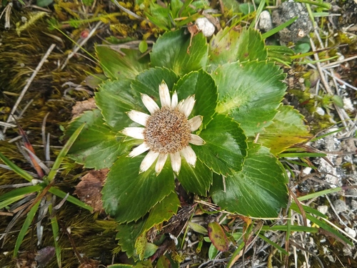

Apiaceae
Eryngium humile Cav.
Publicado por primera vez en Cav. (1800). Anales Hist. Nat. 2: 115 (1800).

Indexaciones: Catalogue of Life, GBIF, iNaturalist, World Flora Online, The Plant List, IPNI.
Nombres comunes: Yerba gorda (eng); kotúč nízky (slk).
Clasificación taxonómica
Dominio: Eukaryota (Chatton, 1925) Whittaker & Margulis, 1978 > Reino: Plantae > Subreino: Pteridobiotina Britton & Brown > Filo: Tracheophyta > Clase: Magnoliopsida > Orden: Apiales Nakai > Familia: Apiaceae Lindl. > Subfamilia: Saniculoideae (Drude) Thorne ex Royen > Tribu: Saniculeae W.D.J.Koch > Género: Eryngium L. > Especie: Eryngium humile Cav.
Sinónimos y combinaciones:
Sinónimos heterotípicos:
- Eryngium costaricense H.Wolff
- Eryngium humile subvar. acaule Wedd.
- Eryngium humile var. brevibracteatum Hieron.
- Eryngium humile var. caulescens Jameson ex Hook.
- Eryngium humile var. caulescens Kunth
- Eryngium humile var. gigantophyllum H.Wolff
- Eryngium humile var. latipes Jameson
- Eryngium humile var. multiradiatum Hieron. ex H.Wolff
- Eryngium humile var. pulchellum Wedd.
- Eryngium humile var. radiciflorum (Tratt. ex DC.) H.Wolff
- Eryngium humile var. radiciflorum Hieron.
- Eryngium humile var. stellatum (Mutis ex F.Delaroche) H.Wolff
- Eryngium humile var. stellatum Hieron.
- Eryngium humile var. subacaule Kunth
- Eryngium humile var. typicum H.Wolff
- Eryngium moritzii H.Wolff
- Eryngium pulchellum Wedd.
- Eryngium radiciflorum Tratt. ex DC.
- Eryngium ranunculoides Willd. ex Spreng.
- Eryngium stellatum Mutis ex F.Delaroche
Distribución
Eryngium humile Cav. ha sido registrada en las siguientes áreas geográficas:
Mexico (Chihuahua, Ciudad de Mexico, Guanajuato, Hidalgo, México State, Michoacán, Morelos, Oaxaca, Tlaxcala, Veracruz); Costa Rica; Panama; Colombia (Antioquia, Boyacá, Caldas, Cauca, Cundinamarca, Meta, Nariño, Norte de Santander, Putumayo, Risaralda, Santander, Tolima); Venezuela (Apure, Venezuela Distrito Federal, Lara, Mérida, Táchira, Trujillo); Ecuador; Peru.
Referencias:
- Cav. (1800). Anales Hist. Nat. 2: 115 (1800).
- Das Pflanzenreich: Regni vegetablilis conspectus. (1900-1937) at BHL.
- Das Pflanzenreich: Regni vegetablilis conspectus. (1913) at BHL.
- Hieron. (1895). Bot. Jahrb. Syst. 20(Beibl. 49): 72 (1895).
- Hieron. ex H.Wolff. Pflanzenreich.
- Jameson ex Hook. (1840). Icon. Pl. Omeiensium 3: t. 216 (1840), nom. illeg.
- Jameson. Icon. Pl. 3, sub tab. 216 (1840).
- Kunth. Nov. Gen. Sp.
- Mutis ex F.Delaroche. (1807). Nouv. Bull. Sci. Soc. Philom. Paris 1: 88 (1807).
- POWO record for urn:lsid:ipni.org:names:841842-1
- Tratt. ex DC. Prodr.
- Wedd. (1857). Chlor. Andina 1: 201 (1857).
- Wedd. (1861). Chlor. Andina 2: 201 (1861).
- Willd. ex Spreng. Syst. Veg., ed. 16.
- Wolff, H. (1909). Repert. Spec. Nov. Regni Veg. 7: 277 (1909).
- Wolff, H. (1909). Repert. Spec. Nov. Regni Veg. 7: 278 (1909).
- Wolff, H. Pflanzenreich.
Susceptibilidad de uso y aprovechamiento sostenible
Materiales:
- Se usa para lavar el cuerpo.
Medicinal:
- La cocción de las flores se bebe como medicina para tratar afecciones nerviosas.
- La infusión de la planta combate la tos.